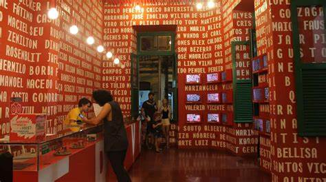
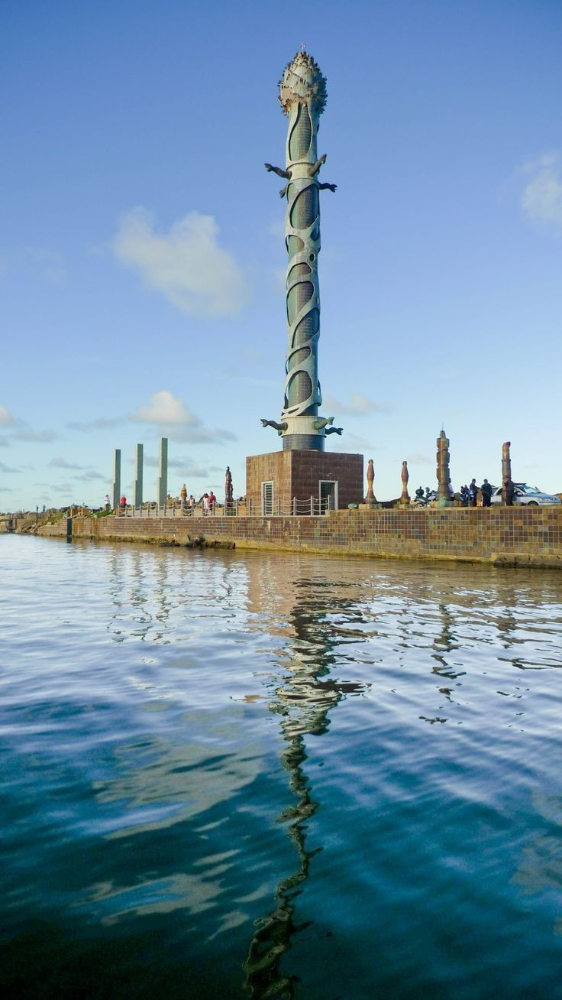

Museu Paço do Frevo

É um ponto cultural importante, pois conta sobre a origem da dança nordestina. Ele tem uma instalação bela e super moderna, com diversas gravuras, ilustrações e livros a disposição. Também conta com um café em suas instalações, que ainda
serve um sorvete de cajá, indicado por todos que provaram. O museu costuma estar aberto todos os dias, e sua entrada é comprada na bilheteria por um preço acessível.
Parque das Esculturas Francisco Brennand

O Parque de Esculturas é composto por obras do artista plástico Francisco Brennand, e foi inaugurado como comemoração dos 500 anos de descobrimento do Brasil. Foi instalado sobre o molhe do porto. Tartarugas, pelicanos, ovos, maçarico,
pássaros roca e sentinela guardam a principal obra do parque, a torre de cristal, inspirada em uma flor descoberta pelo paisagista Roberto Burle Marx. A travessia do Marco Zero até o parque funciona diariamente, das 7h às 17h.